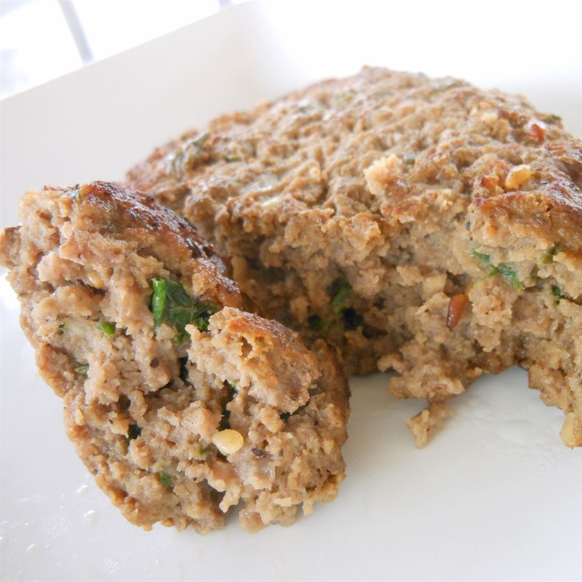

Bulgogi Burger

Description
This is an easy, no-fuss way to enjoy the taste of bulgogi without having to marinate for hours or heat the grill.
Served with steamed white rice and cabbage kimchee, it makes a tasty Korean-inspired meal, fast.
Ingredients
- 1 tablespoon sesame seeds
- 2 pounds lean ground beef
- 2 green onions, minced
- 3 cloves roasted garlic, mashed
- 1/4 cup mirin (Japanese sweet wine)
- 3 tablespoons soy sauce
- 2 tablespoons white sugar
- 1 tablespoon Asian (toasted) sesame oil
- 1 and 1/2 teaspoons ground black pepper
- 1 teaspoon salt
Steps
- Cook and stir sesame seeds in a small dry skillet over medium-low heat until they are fragrant and toasted, about 2 minutes.
- Transfer immediately into a small bowl and let cool.
- Mix ground beef, green onions, roasted garlic, mirin wine, soy sauce, sugar, sesame oil, black pepper, salt, and toasted sesame seeds together in a large bowl until thoroughly combined.
- Divide the meat mixture into 8 portions and form each portion into a large beef patty about 1/2 inch thick.
- Pan-fry the burgers in a large skillet over medium-low heat until browned and the meat is no longer pink inside, about 8 minutes per side.
- An instant-read meat thermometer inserted into the center of the burgers should read at least 145 degrees F (65 degrees F).
Link to original source: allrecipes: Bulgogi Burgers
Back